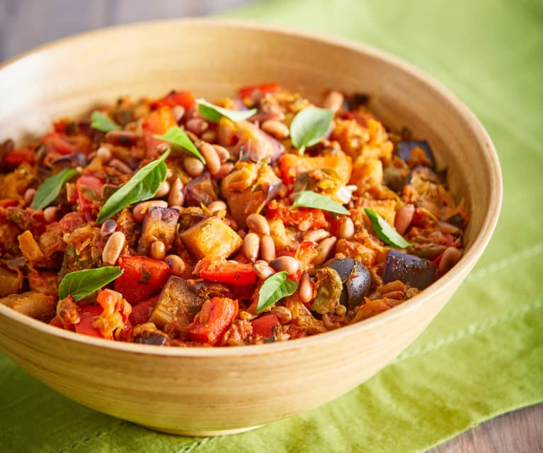

Caponata Recipe

Description:
This authentic caponata is somewhere between a stew and a salad. Sweet and sour aubergines mix with salty olives, capers and tangy tomatoes. Best eaten at room temperature or just warm, this is our dream lunch, served with crusty ciabatta.
Ingredients:
- 4 medium aubergines, chopped into 2cm/1in cubes
- salt and freshly ground black pepper
- 3-4 tbsp extra virgin olive oil, plus extra for drizzling
- 1 onion, chopped
- 2 celery sticks, chopped
- 400g tin chopped tomatoes
- 100g/3½oz green olives
- 3 tbsp capers, drained and chopped
- 2 tbsp red wine vinegar
- 1½ tbsp sugar, or to taste
- handful flatleaf parsley, chopped
- extra virgin olive oil, for drizzling
Steps:
- Sprinkle the aubergines with salt and leave to drain in a colander for 30 minutes.
- Heat some of the olive oil in a large frying pan and brown the aubergine on a moderate heat for 10 minutes. When softened and browned, set aside. You may have to do this in batches.
- Heat the remaining olive oil in the pan and gently fry the onion and the celery until softened and transluscent, but not browned. Add the tomatoes, olives and capers, season with salt and freshly ground black pepper, and cook for 20 minutes until the mixture has thickened.
- In a separate bowl, mix together the red wine vinegar and sugar. Add this to the pan with the aubergine and cook for 10 minutes. It is ready when the red wine vinegar has been absorbed.
- Transfer the caponata to a large bowl, add the chopped parsley and mix well. Drizzle with extra virgin olive oil to serve. Serve hot or at room temperature.
Return to the Homepage